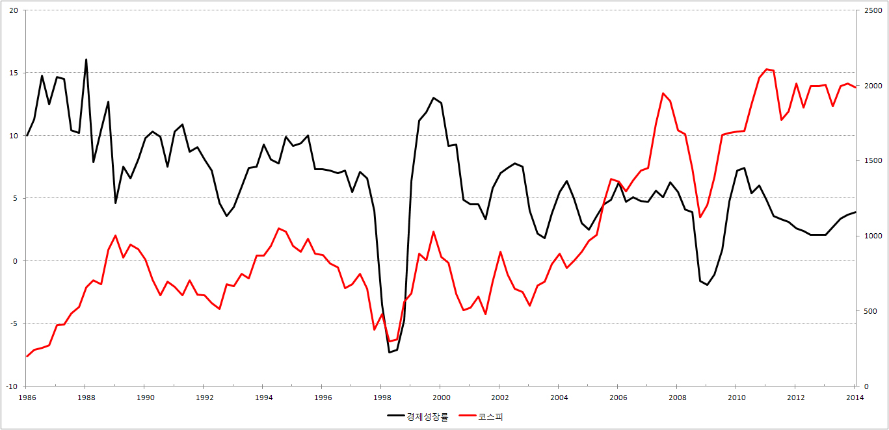

■ 경제성장률과 주가의 관계는?
경제성장률이 아무리 중요하다고 해도 이게 우리의 관심사인 주가와 아무런 관련이 없다면 거들떠 볼 필요조차 없습니다. 따라서 우리는 경제성장률과 주가의 관계를 살펴볼 필요가 있습니다.
아래의 그래프를 한번 보십시오.

{kind=link}
경제성장률과 주가가 은근히 찰떡궁합입니다. 경제성장률이 높아지면 주가도 어김없이 상승하고, 경제성장률이 하락하면 주가도 어김없이 폭락했습니다.
경제성장률이 높아질 때 주가가 상승한 이유는 무엇일까요? 너무나 간단한 이치입니다. 경제성장률이 높아지고 있다는 것은 대한민국의 물질적부가 증가하고 있다는 이야기입니다. 그리고 대한민국의 물질적 부가 증가하면 삼성전자도, 한국전력도 모두모두 지난해보다 더 많은 돈을 벌게 됩니다.
물론 대한민국의 몇몇 회사는 지난해보다 돈을 못 벌었을 수도 있습니다. 하지만 대한민국의 물질적부가 증가한 만큼 평균적으로는 많이 벌었을겁니다. 따라서 삼성전자의 주가도 한국전력의 주가도, 모두모두 상승하게 됩니다.
우리는 이제 다른 모든 경제지표는 집어던지고 딱 하나! 경제지표의 끝판 왕 경제성장률만 보고 주식투자를 하면 됩니다.
경제성장률이 하락하면 주식을 팔고 그동안 번 돈으로 온 세상 유람을 다니면 됩니다. 금수강산 유람을 하고 돌아와서 경제성장률을 체크했는데 이놈이 상승하고 있다면 이제 다시 주식투자를 시작하면 됩니다.
그런데 뭔가 찝찝합니다. 이렇게 쉽게 돈을 벌수 있는데 많은 투자자들이 주식으로, 펀드로 돈을 잃는 것은 그만한 이유가 있을 겁니다. 그렇지 않고서야 이렇게 쉬운 걸 못할 수가 없는 것입니다.
그렇습니다. 경제성장률에는 치명적인 단점이 있습니다. 경제성장률은 1년에 한번 발표된다는 것입니다. 2020년의 경제가 아무리 잘 나가도 그 성적표는 2021년 봄에나 나오는 것입니다. 따라서 경제성장률 발표를 보고 투자를 하게 된다면 이미 주가는 한참 오른 뒤에 뛰어드는 행동을 하게 됩니다.
물론 그렇다고 경제성장률 발표를 진짜로 1년에 한번만 하는 것은 아닙니다. 1년에 한번만 하면 정말 너무 많이 늦습니다. 그래서 3개월에 한번씩 발표를 하고 있습니다. 3개월에 한번 발표를 해도 제때제때 하면 좋겠지만 이것 역시 너무나 많이 늦습니다. 1월~3월의 경제가 얼마나 잘 나갔는지는 5월이 되어서야 결과가 나오고, 4월~6월의 경제가 얼마나 잘나갔는지는 8월이 되어서야 결과가 나옵니다. 따라서 이 발표를 보고 주식투자를 하는 것은 너무나 늦습니다.
따라서 우리는 또 다른 경제지표를 찾아서 경제성장률의 느린 발걸음을 보완해야합니다.